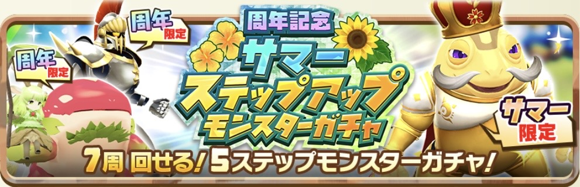

周年記念サマーステップアップモンスターガチャ

ガチャ解説
カワズモー種としては待望の初ガチャ実装モンスターにして、待望の黄色ノーブルモンスター、ルートヴィッヒを入手できるガチャ。
排出率は0.1%とかなり低いが、1回回すごとに1枚もらえるノーブルメダル25枚で、確定でルートヴィッヒ円盤石が入手可能。
ほぼ5天井（15000ダイヤ）前提のモンスターなので、途中で引けた人は超ラッキー。逆に言えば15000ダイヤで確定で貰えるのは良心的。
またこのガチャは最大7天井まで回すことができ、余ったノーブルメダルは「ルートヴィッヒのハート」や「マスターハート」と交換可能。
潜在能力を解放すると高☆の「ノーブル秘伝」が付きやすくなるので、ダイヤに余裕があるなら7天井して活用しよう。
うっかり先にハートにメダルを使って25枚以下になると、ルートヴィッヒ円盤石が交換できなくなるので要注意。